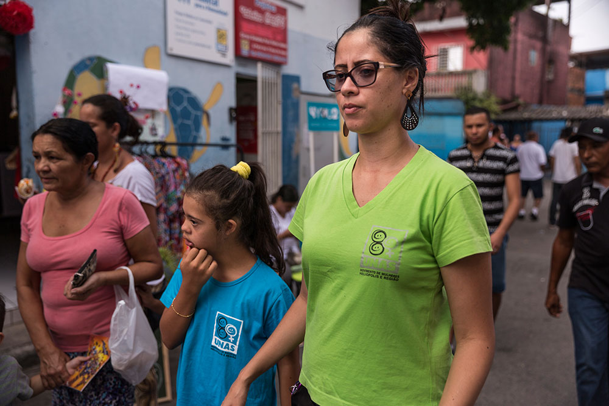
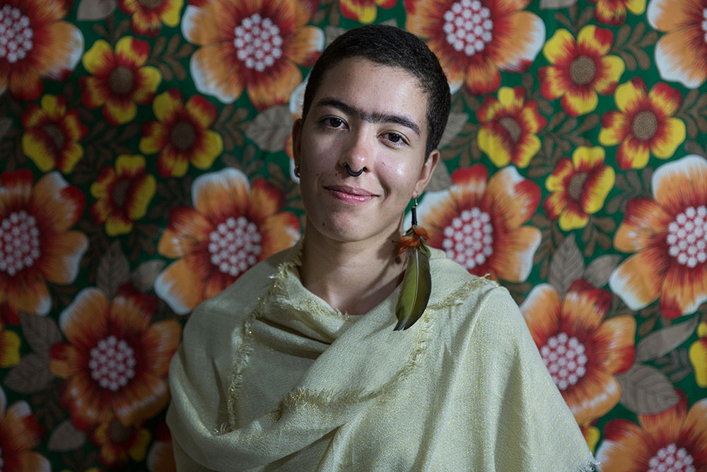
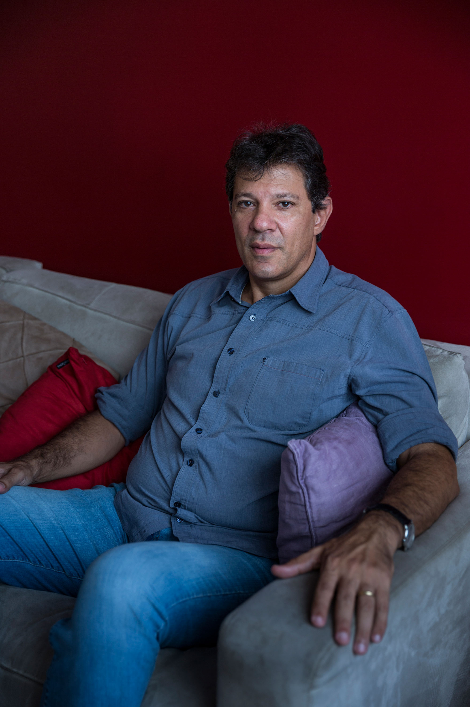
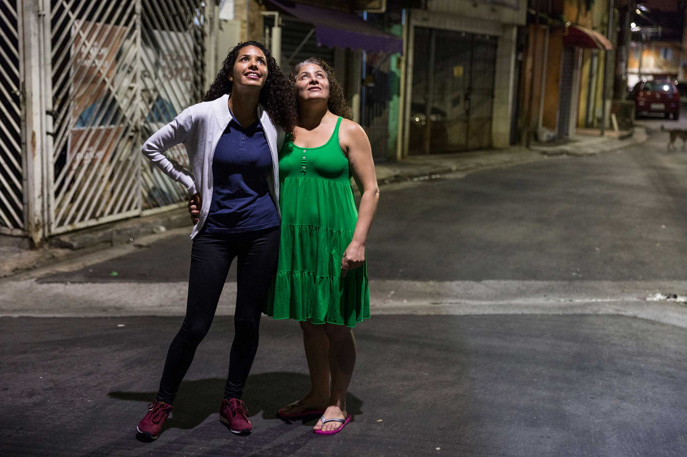
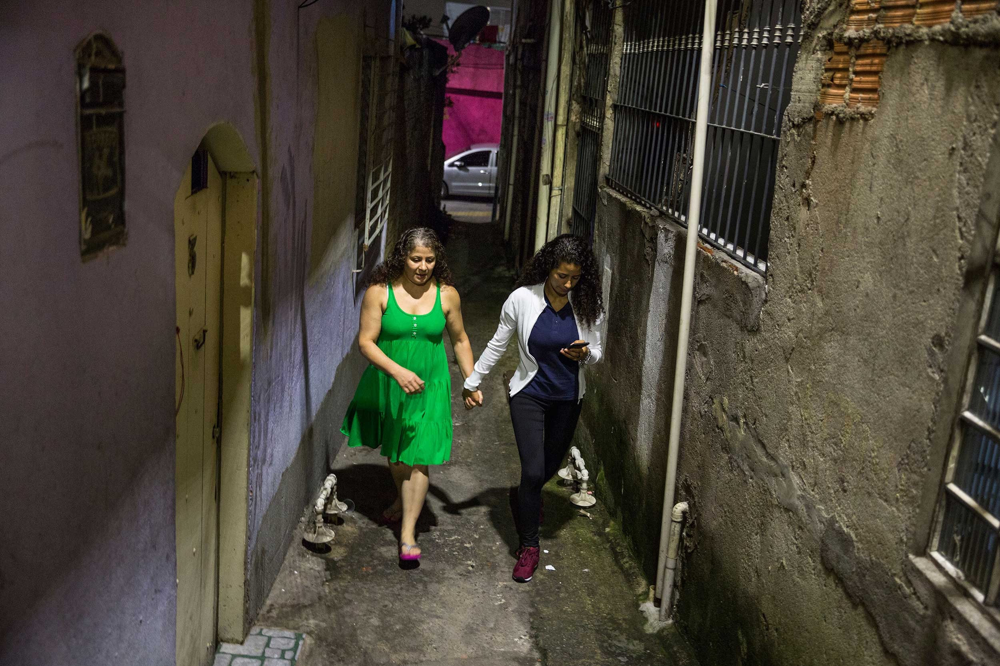
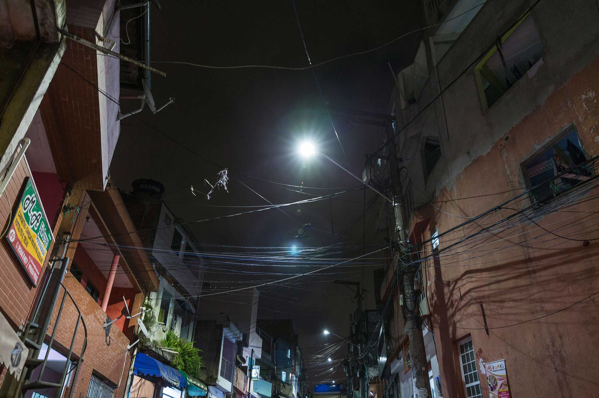
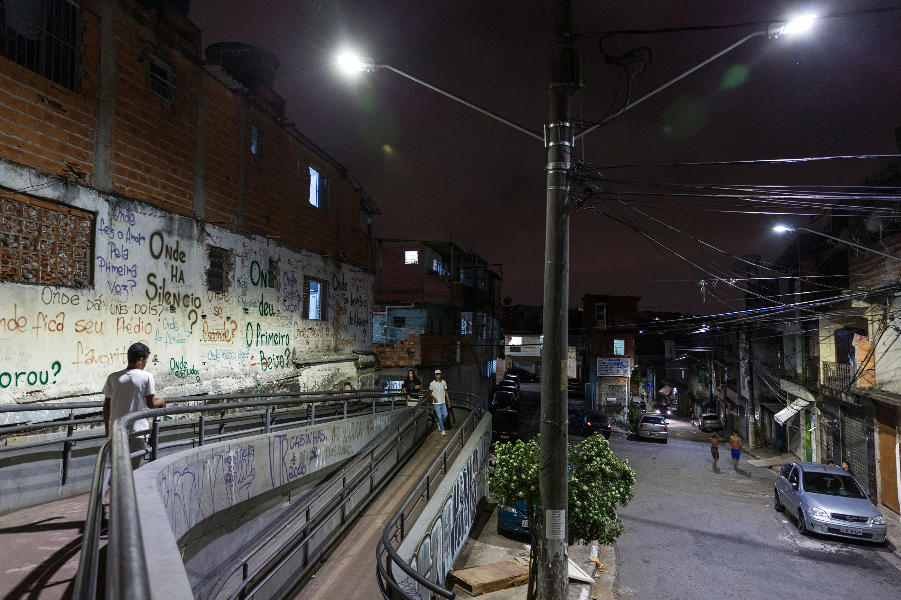
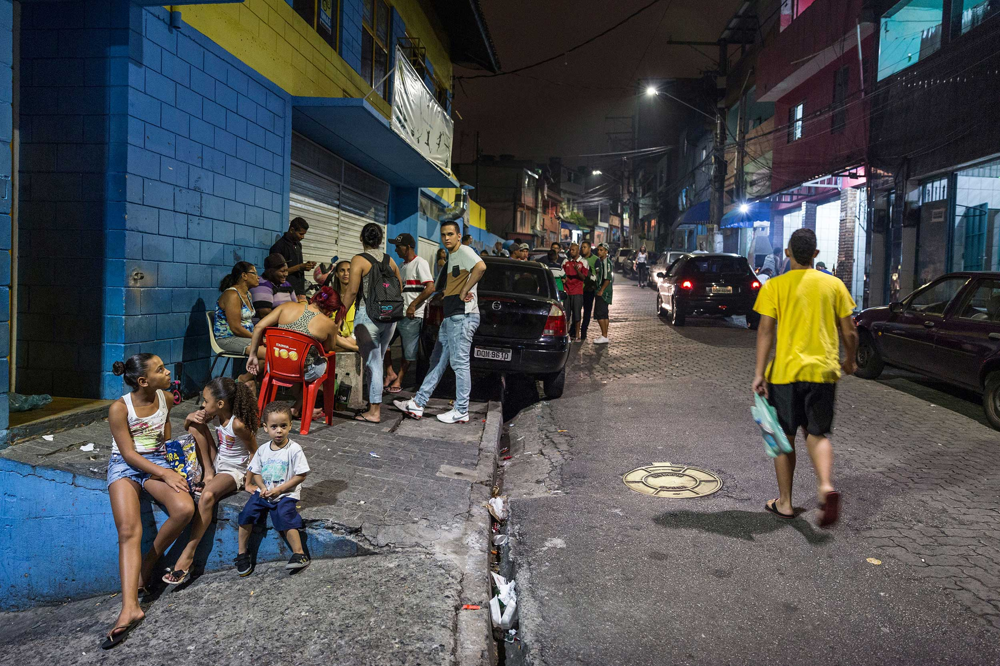
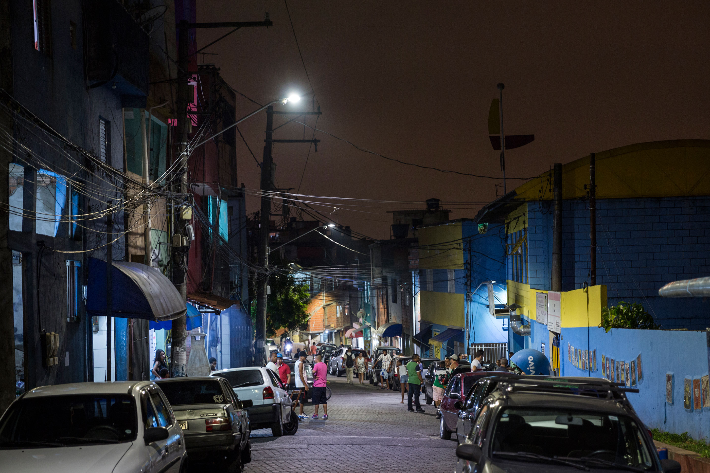

Shining a light on Sun City
Heliópolis, which means Sun City, became Brazil’s largest favela after people flocked to São Paulo in the 1960s and 70s. Over 100,000 inhabitants came, mostly poor people looking for work, and built homes without the support of city planning or regulation.
The informal settlement sprang up on public land quite close to the city centre but instead of support to build homes and infrastructure the newcomers were treated with official hostility. People built their houses as well as they could without planning assistance but their efforts to build a better life were met with attempts to forcefully evict them and transport them back to a life of hopelessness. Eventually roads and other services began to be provided, as Heliópolis became officially recognised as a neighbourhood.
Eventually, after much resistance, Heliópolis became an undeniable permanent reality and was recognised as a neighbourhood of the city. Some services beginning to be provided. However, the scale and quality of basic infrastructure, health, education and housing was totally inadequate. Out of the struggle to resist eviction and demand basic services a community organisation, UNAS, was born in the 1980s with a particular focus on women’s rights. Campaigns were pursued to get reliable electricity supplies and running water and to provide a voice for citizens to influence decisions over their lives.

Lidia is the director of UNAS who supported the demonstration march.
Photo: Fabio Erdos/ActionAid

Indira is an activist from Heliópolis who participated in the demonstration.
Photo: Fabio Erdos/ActionAid
Ninive is a Brazilian activist for ActionAid’s Safe Cities campaign. Photo: ActionAid
Heliópolis was a dangerous place for women, particularly at night in its dark streets and alleys. In 2014 UNAS organised a march with flashlights and candles to highlight the dangers to women from poor or non-existent street lighting. Fear of harassment and violence was limiting women’s freedom to move at night – for work, education, family activities or socialising.
The march had a big impact: not only were broken lights replaced the next day but São Paulo’s City Hall made an even bigger commitment.

Fernando Haddad is the former mayor of São Paulo who installed the first 100% LED light system in Heliópolis after the women’s demonstration campaign.
Photo: Fabio Erdos/ActionAid
Shining a light
Building strong and positive relationships between everyone involved was crucial. The strong reputation of UNAS from working within the community for years, the receptiveness of a progressive mayor, and the strategic support of ActionAid’s Safe Cities for Women campaign all contributed to their success.
What was achieved?
One of the new street lights in Heliópolis. Photo: Fabio Erdos/ActionAid
The results have transformed the lives of women and brought the community to life with streets no longer a no-go area after dark. The LED lighting has brought safety to narrow alleys not only the main roads.
As well as getting a valued, and very visible, improvement the success has strengthened community solidarity and the belief that they can bring about change.

Ninive and her mother are glad to see the new streetlights, which increase visibility and safety at night.
Photo: Fabio Erdos/ActionAid

Heliópolis at night.
PHOTOS (ABOVE & BELOW): FABIO ERDOS/ACTIONAID

Heliópolis at night.
PHOTOS (ABOVE & BELOW): FABIO ERDOS/ACTIONAID

Heliópolis at night.
PHOTOS (ABOVE & BELOW): FABIO ERDOS/ACTIONAID

Heliópolis at night.
PHOTOS (ABOVE & BELOW): FABIO ERDOS/ACTIONAID

Heliópolis at night.
PHOTOS (ABOVE & BELOW): FABIO ERDOS/ACTIONAID
Even after this success there are many more needs for women in the community. Having seized a favourable moment for this campaign, the political environment has changed in São Paulo and across Brazil.
The women of UNAS know that things will be harder now but will not compromise in demanding their rights.